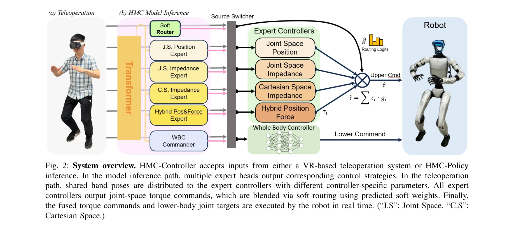
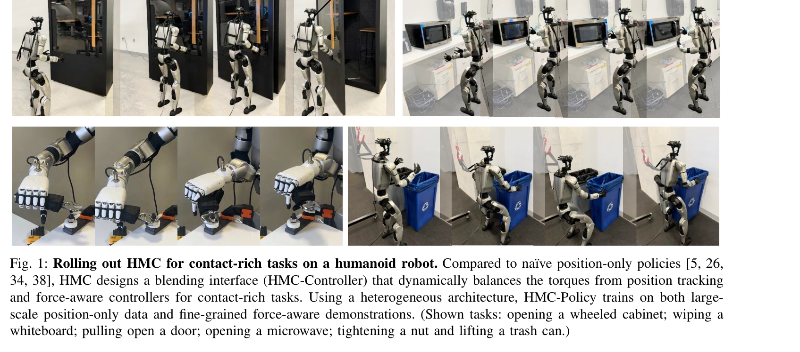

저자: Lai Wei, Xuanbin Peng, Ri-Zhao Qiu, Tianshu Huang, Xuxin Cheng, Xiaolong Wang | 날짜: 2025-11-18 | DOI: 10.48550/arXiv.2511.14756

Fig. 2: System overview. HMC-Controller accepts inputs from either a VR-based teleoperation system or HMC-Policy
로봇의 접촉이 많은 조작 작업을 위해 위치, 임피던스, 하이브리드 힘-위치 제어를 적응적으로 혼합하는 HMC(Heterogeneous Meta-Control) 프레임워크를 제안하며, mixture-of-experts 라우팅을 통해 대규모 위치 데이터와 미세한 힘 인식 시연으로부터 학습한다.

Fig. 1: Rolling out HMC for contact-rich tasks on a humanoid robot. Compared to na¨ıve position-only policies [5, 26,
Fig. 2: System overview. HMC-Controller accepts inputs from either a VR-based teleoperation system or HMC-Policy
총평: HMC는 실제 접촉이 많은 조작 작업의 도전을 체계적으로 해결하는 실용적이고 혁신적인 프레임워크로, 통합된 제어 인터페이스와 이질적 정책 설계가 50% 이상의 성능 향상을 달성하며 로코-조작 분야에 의미 있는 기여를 제시한다.